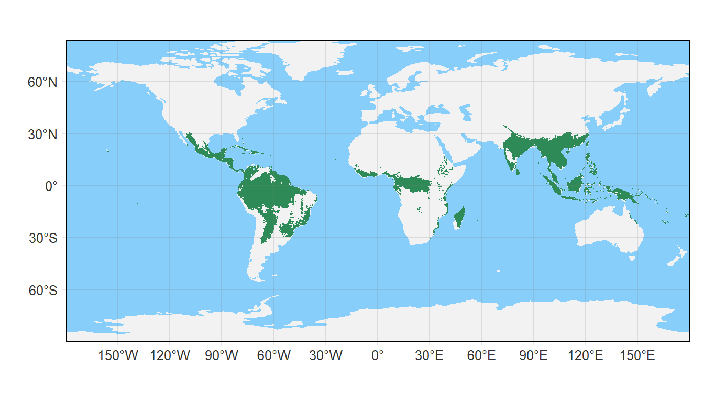
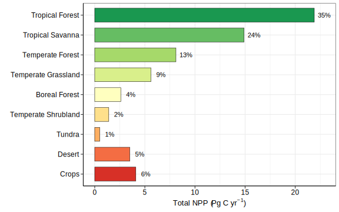
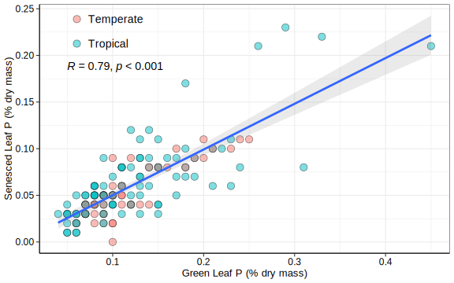
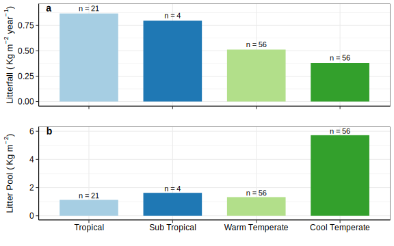
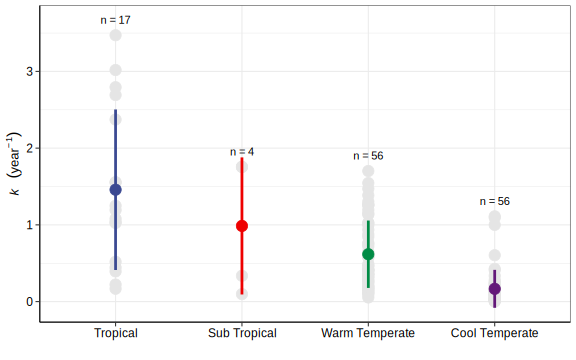
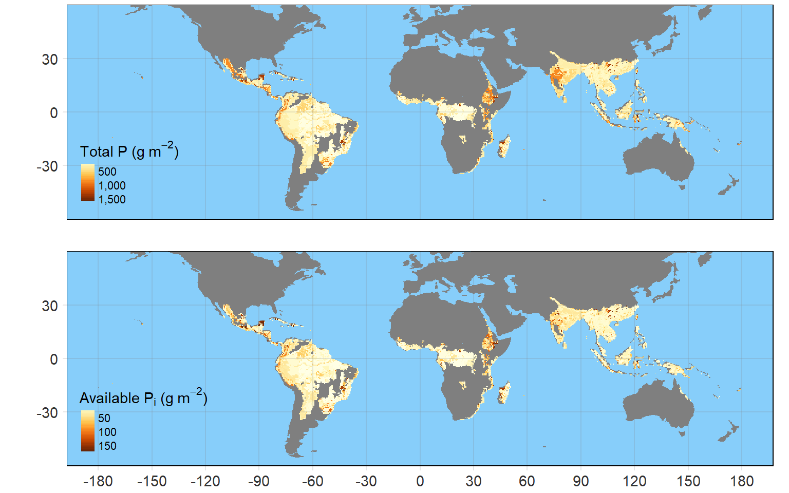

![]()

Phosphorus and litter decomposability traits in tropical forest ecosystems under changing environment: a synthesis
litter decomposition
phosphorus
tropical forests
Abstract
Tropical forests are the most productive and most vulnerable terrestrial ecosystems facing environmental changes. These ecosystems substantially control global nutrient cycling. Although our understanding of carbon and nitrogen cycling has considerably improved during the past decades, phosphorus cycling in tropical forests still remains poorly understood. Tropical forests are characterized by severe phosphorus limitation and very high productivity at the same time. This suggests that tropical plants must have the capacity to adapt to such nutrient-poor environments, which should be reflected in the nutrient concentration of plant tissues via their phosphorus resorption efficiencies and the overall phosphorus cycling. This chapter aims to provide the general patterns and mechanisms of phosphorus cycling in tropical forests. Based on the available evidence, we first overview the general nutrient cycling pattern, then highlight the mechanisms of phosphorus control, and finally discuss the possible responses to climate change. Actually, phosphorus cycling involves soil, plant biomass, and litter as the storage components, and recycling of phosphorus takes place among these components. However, due to substantial loss of nutrients, the cycling of phosphorus tends to slow down with time. Studies involving the external supply of phosphorus have suggested a considerable enhancement in the phosphorus cycle, but this enhancement could not sustain over time. Climatic factors generally control many processes of nutrient cycling; therefore, ongoing climate change has been expected to alter the phosphorus cycling in the tropical forests as well. The available evidence suggests that warm-moist conditions will favor faster litter decomposition rates, whereas seasonality in precipitation will slow down the nutrient cycling. Therefore, in this chapter, we tried to answer how litter decomposability traits and the addition of phosphorus nutrient are controlling the cycling of nutrients in the tropical forest ecosystems under changing environmental conditions.
Introduction
Tropical forests cover more than 50% of the global forest area, which are usually restricted to the tropic of Cancer in the north (23.5°N), and the tropic of Capricorn in the south (23.5°S) of the equator. Brazil represents one-third of the global tropical forest area, and about 75% of the total is limited to just ten countries (Figure 1). These forests are usually distinguished by hot and humid climatic conditions comprising an average temperature range of 25–30 °C, but not less than 18 °C, while the annual precipitation remains greater than 120 cm. Depending on the amount of precipitation and seasonality, these forests can be further divided into dry deciduous, and moist evergreen forests (Singh and Chaturvedi 2017). However, the moist evergreen or rainforests usually experience higher precipitation (greater than 230 cm year–1), whereas the dry deciduous forests account precipitation ranging from 120 cm to 280 cm year–1. The latter is characterized by a distinct dry season ranging from 2-8 months (Singh and Chaturvedi 2017). They occur on lowlands, hills, and mountains with different ranges of rainfall gradients. Geographically, tropical forests cover an area of about 6% of the global land area but support rich biodiversity; for example, more than half of all the known species of plants and animals are native residents of tropical forests (Smith and Smith 2015). Therefore, these dominant forests have a large influence on the regulation of global ecological processes such as climate regulation, nutrient cycling, productivity, and energy flow.
Global environmental change is an everlasting phenomenon that cannot be immediately controlled, and its possible effects are expected to alter the pace of structure and functioning behavior of a natural ecosystem. Therefore, it is not a surprising fact for ecology, but specifically, the ongoing climate change and the current rate of deforestation are bringing major threats to the sustainability of tropical forest ecosystems at unprecedented rates. These alterations can potentially compromise the ecosystem services leading to high uncertainty about the sustainability of life on the planet. Therefore, increased understanding of the ecosystem processes is highly warranted to reduce their fragility, and develop management strategies for sustaining life on earth.
Nutrient cycling is probably a very critical ecological process that shapes the structure and functions of an ecosystem (Krishna and Mohan 2017). All biotic component (organisms) requires certain essential nutrients (C, N, and P) for their growth and metabolism. These nutrients are often acquired by organisms from the environment or by consuming other organisms. When these organisms die, nutrients are returned to the ecosystem again in a cyclic manner called bio-geo-chemical cycles. In tropical forests, plants absorb the available nutrients from the soil and then allocate them into various plant parts in the form of standing state of biomass. These mineralized nutrients are again returned to the ecosystem when the plant parts fall on the forest floor and get decomposed. The atmosphere and weathering rocks are the sources for nutrient input to the ecosystem, whereas run-off and leaching cause the loss of nutrients. Rainfall plays an important role in balancing the nutrients in tropical rainforests as it adds dissolved nutrients to the forest ecosystems and removes the deposited nutrients as water run-off (Figure 2). Since environmental conditions substantially regulate the nutrient cycling processes such as nutrient supply, availability, and cycling, it is expected that climate change will potentially alter these cycles and threaten the natural balance of the forest ecosystems. Therefore, understanding the role of controlling factors in nutrient cycling is important for developing a sustainable strategy for effectively managing natural forest ecosystems.

Nutrient availability in soils is highly dependent on the rate of litterfall and decomposability traits of the litter. Moreover, several other factors, including climate, litter quality, and soil organisms, influence the rate of litter decomposition. The physico-chemical characteristics of litter determine its quality; for instance, the litter with higher nutrients and lower structural compounds is considered as ‘high quality’ litter. Since nitrogen (N) and phosphorus (P) are limiting nutrients for plant growth and metabolism, understanding their cycling will advance our knowledge about the ecological processes in tropical forests. Although many studies have investigated the different aspects of nitrogen cycling, understanding about phosphorus cycling still remains ambiguous for tropical ecosystems. This chapter describes the role of phosphorus in litter decomposition and the influences of climate on these processes in tropical forests. For this chapter, information is collected based on a literature survey from the Scopus and Web of Science database using the keyword combination as “phosphorus AND (litter decomposition) AND tropical”. Additionally, relevant data were extracted from various research articles, textbooks, while the open access data were also consulted for getting more information.
Biomass Production in Tropical Forests
Plants take nutrients from the soil and incorporate them into organic compounds, which together constitute the dry matter of plants called biomass, while the new organic matter or biomass produced during a given time per unit area is called productivity. In terrestrial ecosystems, biomass production by producers is commonly referred to as primary production, whereas biomass production by herbivores is called secondary productivity. Plants produce biomass by fixing light energy into organic matter through photosynthesis; however, not all plants fix the light energy equally. For example, coniferous trees fix light energy much more efficiently than deciduous trees due to the higher surface area of the evergreen needles. The net primary productivity (NPP) is the net amount of biomass produced, i.e., gross primary productivity (GPP) minus the energy lost during respiration (R) (i.e., GPP–R = NPP). Therefore, NPP is often used to express the biomass production of an ecosystem (also termed direct function). The NPP may vary among ecosystems because it is regulated by several factors such as temperature, moisture, nutrients and life span too (Smith and Smith 2015).
Despite the limited availability of nutrients, tropical forests have the highest NPP among the terrestrial ecosystems (Figure 3). The high NPP of tropical forests can be attributed to warm and moist environments due to the suitable temperature range (25 to 30 °C) and high rainfall (>120 cm). Apart from climatic conditions, soil nutrient availability plays an important role in regulating biomass production, especially in tropical forests, as nutrient capitals, particularly C, N, and P, are in a limited range. It has been observed that biomass production is first limited by nitrogen availability and then phosphorus availability in terrestrial ecosystems (Smith and Smith 2015). Generally, the soils of tropical forests are poor in available phosphorus, and phosphorus is the limiting nutrient to productivity; therefore, tropical plants must adopt some specific mechanisms to capture phosphorus by any possible means. Thus, tropical plants may either efficiently function in limited phosphorus availability or they need to efficiently recycle phosphorus. Regarding the former case, plant tissues should have low concentrations of phosphorus, while for the latter case, plants must exhibit high resorption efficiency for phosphorus (Dalling et al. 2016). Various evidence supports the former hypothesis that tropical plants are probably well-adapted to function in phosphorus-poor environments because their tissues usually have limited concentrations of phosphorus. Moreover, some recent studies have suggested that external addition of phosphorus to tropical soils significantly increase the phosphorus concentration in plant tissues, e.g., leaf (Turner et al. 2015; Mo et al. 2019), stem (Mo et al. 2015), and roots (van Huysen, Perakis, and Harmon 2016).

Various nutrients absorbed from the soil are incorporated into plant tissues. The allocation of nutrients to different plant tissues depends on the physiology and adaptation of plant species. In general, tropical plants tend to invest more in above-ground components for overcoming light limitations (Tripathi et al. 2020). Thus, most of the nutrients are locked up in above-ground components, especially the canopy in tropical forests. These nutrients return to the soil via litterfall and release through the decomposition process. It has been observed that the nutrient concentrations in the litter are the legacy of nutrients in live components. For example, phosphorus concentrations are found to be substantially lower (20 to 55%) in senesced leaves compared to the green leaves (Figure 4).

Litter-Fall and Litter Pool in Tropical Forests
Litter consists of plant parts that are broken down from plants and fall on the ground or forest floor. The total amount of litter accumulated on the forest floor per unit area is called the litter pool; whereas, the total amount of litter accumulated on the forest floor per unit area per unit time is referred to as litterfall. The hot and humid climate of tropical rainforests supports high energy fixation augmenting in higher primary productivity (Figure 3). Thus, higher primary production eventually leads to a high amount of litterfall in tropical forests as compared to cooler and dry temperate forests (Figure 5 a). On the other hand, this pattern is roughly reversed for the litter pool, which is the amount of accumulated litter on the soil surface. The litter layer is much thicker in temperate forests than the tropical forests. This may be attributed to the cooler climate of temperate forests, which slow down the activity of decomposers. Among tropical forests, the tropical deciduous forests are characterized by a distinct dry season of varying lengths. Most of the trees in such forests shed their leaves during the dry season, and thus, tropical deciduous forests have a thicker layer of litter than tropical rain forests. In tropical rainforests, the litter pool is much smaller due to the higher activity of decomposers and leaching, and thus, the litter is consumed as soon as it falls, leading to a much thinner litter layer (Figure 5 b).

Litter Decomposition in Tropical Forests
The dead plant parts, including leaves, branches, flowers, fruits, and woods, fell on the ground and all together constitute the litter. This litter is the source of nutrients for soil and a source of energy for decomposer organisms. The nutrients locked up in litter are released by the process of decomposition. A higher decomposition rate results in the quick release of nutrients and therefore increases the nutrient availability in soils. The rate of litter decomposition is often estimated by tracking the mass loss with respect to time. In most terrestrial ecosystems, the mass loss of litter follows an exponential pattern, and a constant amount of mass is lost per unit of time (Olson 1963). If M0 is the mass of initial litter, and Mt is the remaining mass of litter at a given time t, then this rate can be represented as:
\[ M_t = M_0 ~ e^{-k~t} \] where, k is an exponential constant that characterizes the decomposition rate under specified conditions. Since this k represents the rate of decomposition, it is also known as decomposition constant or decay constant. At a larger scale, the decomposition rate is estimated as the mean residence time of the litter, i.e., the average time required for litter to decompose in given environmental conditions. The mean residence time is estimated as the ratio of litter pool to litterfall in a particular ecosystem, which corresponds to the inverse of decomposition rate constant (k).
\[ \text{Residence time} = \frac{\text{Litter pool}}{\text{Litterfall}} = \frac{1}{k} \]
The decomposition rate of litter is influenced by several factors, including climate, physico-chemical properties of litter, and micro-organisms. Thus, the decomposition rate of the litter varies across ecosystems, being highest for tropical rainforests (Figure 6) and lowest for boreal forests (Olson 1963; Zhang et al. 2008). Tropical forests have unusually high productivity and therefore produce a large amount of litter. However, warm and moist conditions of rainforests also cause rapid decomposition of litter; consequently, the litter layer is very thin, and the litter pool is very small. Tropical deciduous forests are characterized by a distinct dry season and many plants shed their leaves during the dry season. During this season, the decomposition is very slow, and therefore litter layer is much thicker than in tropical rain forests. On the other hand, temperate forests are often characterized by cooler climates, which slow down the decomposition rate resulting in thick layers of litter. Thus, the warm and humid climate of tropical forests results in a smaller litter pool as compared to temperate forests (Figure 5 b).

The litter manipulation experiments (experimental removal or addition of litter) suggest that the nutrient availability in soils is regulated by litter in tropical forests (H. Chen et al. 2014). Moreover, the experimental addition of litter increased both the available and unavailable forms of phosphorus in soils (Schreeg2013?). In another study, not only the soil phosphorus but also the foliar phosphorus concentrations increased, followed by litter addition in tropical forest ecosystems (Sayer2010?). This suggests that there is high phosphorus limitation in tropical soils, and plants tend to absorb and allocate most of the available phosphorus to plant tissues. Thus, the phosphorus in plant tissues is a major source of nutrients in tropical soils, which maintains the nutrient availability in the soils (Schreeg2013?). The phosphorus present in the litter is mostly organically bounded phosphorus, and it needs to be converted into the inorganic form so that plants can uptake it. This conversion of phosphorus from unavailable form to available form is called phosphorus mineralization, and mineralization rates of nutrients greatly influence the nutrient cycling in forest ecosystems (Ushio2010?). It has been observed that the higher concentration of phosphorus in initial litter leads to higher mineralization rates (Bargali et al. 2015). Thus, litter is an important source of nutrients in tropical forests which are released by the activity of decomposer organisms and consequently made available to the plant (Singh1989?).
Initial phosphorus and litter decomposition
In tropical forests, nutrients are returned to the soil and made available to plants by the process of litter decomposition. Thus, litter decomposition chiefly regulates nutrient availability and nutrient cycling in terrestrial ecosystems. The rate of litter decomposition is primarily regulated by the climatic conditions, physico-chemical traits of litter, and the activity of decomposer organisms (Aerts 1997; Bradford2016?; Cornwell et al. 2008). Among physico-chemical traits, the chemical quality of litter, such as lignin to nitrogen ratio, carbon to nitrogen ratio, and nutrient concentrations, are suggested as dominant controllers of decomposition rates across biomes (Cornwell et al. 2008; Zhang et al. 2008). Further, some studies also advocated that litter nutrients such as nitrogen and phosphorus are strongly correlated with decomposition rates suggesting the role of nutrients in regulating the decomposition rates (Patil2020?).
The initial phosphorus concentration of leaf litter is the good controller of decomposition rate, and litter with high phosphorus concentration tends to decompose at much faster rates (Cassart et al. 2020). Previous studies have suggested that the leaf litter with high initial phosphorus exhibited faster decomposition rates in tropical forests ((figure-initialp?)). Similarly, the woody debris from tropical forests with higher phosphorus concentration decomposed at a faster rate than the woody debris with lower phosphorus concentrations (Y. Chen et al. 2016). However, the rate of root decomposition is not found to be associated with its initial phosphorus concentration in tropical forests (See2019?).
Studies investigating litter decomposition in ecosystems often determine the fate of individual nutrients during litter decomposition. The concentration of different chemical constituents of the litter varies as the decomposition progresses. In tropical forests, the total phosphorus concentration tends to increase in residual litter during decomposition, and even the final concentration of phosphorus can reach almost twice the initial phosphorus concentration in the litter (Bargali et al. 2015). It has been suggested that this increased phosphorus concentration may be contributed by microbial biomass (Turner2014?; Yokoyama2017?).
Effects of phosphorus addition
The external addition of phosphorus to the tropical soils tends to enhance the phosphorus cycling in tropical forests. The fertilization of tropical soils increases the phosphorus availability in the soil, which in turn results in the production of tissues with high phosphorus concentrations (Santiago2012?). This is supported by the results of fertilization experiments, where the external addition of phosphorus resulted in increased phosphorus concentrations in leaves (Turner et al. 2015; Mo et al. 2019), roots (Wurzburger2015?; van Huysen, Perakis, and Harmon 2016), and stem (Mo et al. 2015; van Huysen, Perakis, and Harmon 2016) of tropical plants. Further, it has been observed that phosphorus concentrations of the stem also increase by the external addition of phosphorus, followed by older leaves and younger leaves (Mo et al. 2015). When plant parts with high phosphorus fall on the ground, they are quickly decomposed by micro-organisms and release the phosphorus locked up in plant tissues. Thus, faster decomposition again increases the phosphorus availability (Mayor2014?; Feng2019?) and soil microbial phosphorus (Turner2014?; Yokoyama2017?) in tropical soils. However, some phosphorus in soils is always lost through run-off and leaching, which results in phosphorus limitation again with time. This is supported by the observations of a few studies where the old-growth forests accounted for lower soil pH and available phosphorus than the younger forests (Fujii2014?; Zhu2015?).
The litter decomposition rates in terrestrial ecosystems are highly inclined with nutrient availability. For example, phosphorus is an essential nutrient that can potentially regulate the litter decomposition rates since the growth and activity of many organisms are limited by phosphorus availability (?@fig-paddition). Thus, soil phosphorus concentration can substantially impact the decay patterns of litter in tropical ecosystems (Parsons2014?). Plenty of available evidence suggests that external addition of phosphorus tends to accelerate the litter decomposition rates (Barantal et al. 2012; Camenzind2018?; Mori2018?), though may also either retard or did not affect the litter decomposition rates. Moreover, the results of phosphorus fertilization experiments have indicated that litter decomposition rates in tropical forests are constrained by the phosphorus limitation (Vitousek2010?).
The litter decomposition rates are accelerated when the litter is supplied with external phosphorus sources (Barantal et al. 2012). This enhanced decomposition rate may be due to the increased activity of decomposer organisms because their growth and activity are also limited by phosphorus availability (Camenzind2018?; Mori2018?). The phosphorus limitation of microbial growth has been evaluated by experiments where the external supply of phosphorus significantly increased microbial growth and their activity (Fanin2015?; Camenzind2018?).
Figure 8. Graphical representation of Phosphorus Addition effects on Phosphorus Cycling in the Tropical Forests. The abbreviations are P = Phosphorus, Po = Organic Phosphorus, Pi = Inorganic Phosphorus.
Therefore, we can assume that the external addition of phosphorus might be responsible for increased litter decomposition rate by enhancing soil respiration (Feng2019?), microbial biomass (Liu2012?; Liu2013?), microbial abundance, and microbial activity (Camenzind2018?). This enhanced decomposition rate can be attributed to the increased activity of phosphorus releasing enzymes such as phosphatases (Yokoyama2017?). However, another study reported that the external addition of phosphorus decreased the activity of phosphatases (Dietrich, Spoeri, and Oelmann 2016). These contrasting observations suggest that effects on the activity of phosphorus releasing enzymes are not the sole mechanism. Also, this mechanism is challenged by reports where litter decomposition rates are either slowed down (H. Chen et al. 2013) or not affected after the addition of phosphorus (Powers2011?). The slower decomposition rates after phosphorus addition are suggested to be related to augmentation of phosphorus immobilization by microbial organisms because they accessed sufficient phosphorus from external supply only (H. Chen et al. 2013).
Phosphorus Availability in Tropical Forests
Soils are major and perhaps the only source of nutrients for plants in tropical ecosystems (Janssens2015?). In soils, phosphorus occurs in several forms, and all forms are not available to plants for uptake and metabolism. The organic phosphorus comprises phosphate monoesters, phosphate diesters, organic polyphosphates, phosphonates, and phytates (Turner2011?), whereas the inorganic form mainly comprises orthophosphates. Phosphorus is poorly mobile in the soil; therefore, the soil solution contains a limited amount of inorganic phosphorus, which is available for uptake to the plants in the form of phosphate-pi (PO4-Pi) (Vitousek2010?).

The soils of tropical forests are shallow and nutrient-poor due to heavy precipitation, which results in loss of nutrients through leaching (Krishna and Mohan 2017). The phosphorus limitation in tropical forests could be primarily driven by the depletion of available phosphorus, the formation of soil barriers to access the available phosphorus, and the low input from parent rocks (Vitousek2010?). Although most tropical forests have limited availability of phosphorus (van_der_Sande2018?), lowland tropical forests are even poorer in phosphorus availability. Available data suggests that only 10% of the total soil phosphorus is available to the plants for uptake in tropical forests ((figure-9?)). However, organic phosphorus, which is unavailable to plants, is present in larger amounts as compared to inorganic phosphorus in tropical soils (Reed2011?). This organic phosphorus needs to be converted into inorganic form by the activity of enzymes phosphodiesterase, phosphatase, and phytase secreted by roots or microbial organisms (Plaxton2015?). This conversion involves a sequential action of phosphodiesterase and phospho-mono-esterase enzymes (Nannipieri2011?) or phosphatases, which catalyze the hydrolysis of the ester-phosphate bond of phosphoric acid in phosphorus-limited soils (Batterman et al. 2018).
The plant roots and microbial organisms secrete various extracellular enzymes in soil, which are responsible for the chemical alteration of litter and release of nutrients in the soil (Wallenstein2011?). The concentration and activity of these enzymes are affected by nutrient availability in the soil, and it has been reported that the concentration of enzymes associated with phosphorus degradation is higher in phosphorus-limited soils as compared to phosphorus-rich soils (Ushio2010?). Further, it has been observed that the phosphatase (Tischer2014?) and phospho- mono-esterase (PME) activities are higher in tropical soils with low phosphorus availability than the tropical soils with high phosphorus availability (Guilbeault-Mayers2020?). Moreover, studies have also observed that the external supply of phosphorus in tropical soils suppress the activities of phosphorus degrading enzymes such as phosphatases (Zhang2020?), phospho-mono-esterase (Turner2014?; Ma2020?), and pyrophosphatase and phytase (Yokoyama2017?). These studies altogether suggest that the production and activity of phosphorus degrading enzymes is an adaptation to phosphorus limitation in tropical soils (Guilbeault-Mayers2020?).
Responses to Changing Environment
Nutrient cycling in terrestrial ecosystems is highly controlled by climatic factors, especially temperature and precipitation (Afreen, Singh, and Singh 2019). The available data suggests that litter decomposition rate is positively associated with temperature and precipitation ((Figure-10?)). Since litter decomposition rate is associated with mean annual temperature and precipitation, we can expect potential shifts in nutrient cycling patterns due to changing environmental conditions.
Figure 11. Impacts of Climate Change and Disturbance on Soil Phosphorus Availability in Tropical Forest Ecosystems. Green Arrows represent the Positive Effects, and Red Arrows represent the Negative Effects. LD refers to Litter decomposition.
The ongoing climate change is projected to alter phosphorus cycling in tropical forest ecosystems (Friedlingstein2010?). These effects may cascade through changes in litter quality, nutrient availability, and litter decomposition rates in tropical forests (Gavito2018?; Afreen, Singh, and Singh 2019). Specifically, litter decomposition rates are expected to face major alterations because they are highly influenced by abiotic factors such as temperature and precipitation (Waring2012?; Zhang2015?), as well as biotic factors like soil fauna (Hattenschwiler2010?).
Among various abiotic factors, the effects of warming and moisture availability have been exclusively investigated, and most of the studies have revealed consistent direct or indirect effects of warming on litter decomposition (Patil2020?). The climatic control of litter decomposition suggests that decomposition rates are expected to be higher with an increase in average surface temperatures (Pandey2014?). This theoretical prediction is supported by several studies conducted in tropical forest ecosystems, as these ecosystems are very sensitive to warming (Bai et al. 2013). The effects of warming on litter decomposition might be modulated by changes in leaf nutrients (Wu2019?). For example, it has been shown that warming leads to the production of leaves and litter with higher phosphorus concentrations (Campo and Merino 2019; Lie2019?), which eventually decompose at faster rates. Consequently, warming-induced higher decomposition rates lead to higher nutrient release in tropical soils (Liu2017?). This is supported by a few studies where warming significantly increased the available soil phosphorus (Lie2019?) and microbial phosphorus (Li2014?) in tropical forests ((Figure-11?)). The increased phosphorus availability may lead to reduced production and activities of enzymes associated with phosphorus mineralization in tropical forests. A recent study found that the activity of the acid phospho-mono-esterase enzyme, an enzyme associated with phosphorus mineralization, was reduced due to warming (Lie2019?). However, the activity of this enzyme increased during the wet season (Lie2019?) due to increased moisture availability (Dietrich, Spoeri, and Oelmann 2016), suggesting that soil moisture availability is more important for the activity of this enzyme. Thus, warming can alter nutrient cycling in tropical forests by modifying litter decomposition, nutrient release, litter quality, and soil moisture availability. Moreover, the warming induced-effects on the nutrient release have been reported greater compared to litter quality and soil moisture (Liu2017?).
The effects of precipitation are linked to soil moisture availability because higher precipitation often results in high soil moisture availability. The soil moisture availability is a dominant controller of litter decomposition rates, and it is positively related to leaf litter weight loss (Pandey2014?). Since moisture availability varies during different seasons, the decomposition rates also show seasonal variations. Many tropical forests experience a rainy season of varying lengths, and it was found that litter decomposition rates are higher during the rainy season compared to the dry season (Pandey2014?). Further, it was shown that a reduction in precipitation also leads to suppression in the litter decomposition rates (Zhou2018?). These effects on litter decomposition are also driven by changes in leaf nutrient concentration, enzymes, and microbial activities in tropical forest ecosystems. The leaf and litter phosphorus concentrations are positively related to precipitation and soil moisture availability (Mani2019?). For example, the leaf phosphorus concentration increases in the wet season compared to the relatively dry season in tropical plants (Renteria2011?). Further, litter decomposition rates were found to be higher in the warm-rainy season compared to the dry-winter seasons in tropical forests (Pandey2014?). This faster rate of decomposition in the warm-rainy season can be attributed to higher microbial growth and activities in the rainy-warm season compared to a dry-winter season (Liu2012?). Higher activities of micro-organisms may have increased the production and activity of decomposition- associated enzymes because it was observed that enzymatic activities tend to increase in the wet season (Lie2019?). In particular, the activity of acid phosphatase enzymes increased in the wet season in tropical forests (Waring2014?). Similarly, the activities of the phospho-mono-esterase have also been observed to be positively correlated to soil moisture content (Dietrich, Spoeri, and Oelmann 2016). Higher soil enzyme activities in wet seasons may have resulted in greater phosphorus availability in tropical soils because wet soils usually have higher phosphorus availability than dry soils (Lie2019?). Further, soil moisture is an important driver to regulate soil phosphorus, which has also been found to be positively associated with concentrations of available phosphorus in the tropical soils of Puerto Rico (Wood2016?).
Apart from climatic factors, the disturbance is also an important factor that affects litter decomposition and nutrient availability in tropical forests. Logging, wildfires, and hurricanes are probably major disturbing factors across the global tropical forest ecosystems. In general, disturbance tends to slow down the litter decomposition, possibly due to alterations in biotic components of ecosystems. For example, litter decay rates are found to be slower in logged forest fragments than in the unlogged forest fragments (Ewers2015?; Yeong2016?). However, exclusion of invertebrates (termites, ants, beetles, and earthworms) from leaf litter has not affected the litter decomposition rates in logged forests suggesting that invertebrates had less contribution to litter decomposition in the logged forest as compared to the unlogged forest (Ewers2015?). Wildfires are another disturbing factor that acts to slow down the litter decomposition rates in tropical forests. Wildfires have been suggested to slow down the decomposition rates by imposing environments of high temperature and low humidity (Brando2012?), which retards decomposition. Further, wildfires may have caused high mortality of soil decomposers for a short time. The effects of hurricanes are variable on litter decomposition and nutrient cycling in tropical forests (Gavito2018?). For instance, the decomposition rates were found to decrease by hurricane Jova but increased by hurricane Patricia (Gavito2018?).
However, hurricanes are supposed to affect nutrient cycling through modifications in leaf nutrients, litter quality, and litter decomposition (Gavito2018?; Jaramillo2018?). For example, hurricane Jova has been suggested to induce the increment in phosphorus concentration in leaf litterfall (Jaramillo2018?). Thus, phosphorus availability in tropical soils is regulated by climatic and disturbance factors ((Figure?) 11).
Conclusion
Despite severe phosphorus limitation, tropical forests are the most productive terrestrial ecosystems on the globe. These ecosystems produce a large amount of litter; however, the litter is consumed and decomposed very quickly, resulting in a very thin litter layer in tropical forests. The litter decomposition rates in tropical forests are very high, and the mean residence time for litter in tropical forests varies from 4 to 20 months which is substantially less than in temperate forests. As a result of high decomposition rates, nutrients within tropical ecosystems are recycled efficiently. Since phosphorus is an important regulator for nutrient cycling in tropical forests, it limits biomass production, litter decomposition rates, and soil nutrient availability. The external supply of phosphorus tends to enhance overall nutrient cycling, suggesting its limitation in tropical forests. Tropical soils are poor in total phosphorus concentrations and even poorer in concentrations of available phosphorus. The availability of soil phosphorus in tropical soils is maintained by litterfall, litter addition, and litter decomposition in the tropical forests.
Many processes of nutrient cycling are basically controlled by climatic factors such as biomass production, litter decomposition, and nutrient availability. Therefore, ongoing climate change is projected to alter nutrient cycling in tropical forests. The warming effects are expected to increase litter decomposition, whereas seasonality in precipitation is projected to slow down the litter decomposition rates. The effects of climate change may cascade into nutrient cycling through alterations in nutrients in biomass, litterfall patterns, litter decomposition rates, growth and activity of decomposer organisms, and activity of soil enzymes. However, increased understanding is needed to advance our knowledge about the patterns, mechanisms, and responses of nutrient cycling in relation to global environmental change. In conclusion, this advanced knowledge will be useful for managing tropical forest ecosystems and crop production to manage sustainability in the tropical forest ecosystems in a changing environment.
References
Aerts, Rien. 1997. “Climate, Leaf Litter Chemistry and Leaf Litter Decomposition in Terrestrial Ecosystems: A Triangular Relationship.” Oikos 79 (3): 439–49. https://doi.org/10.2307/3546886.
Afreen, Talat, Hema Singh, and J. S. Singh. 2019. “Influence of Changing Patterns of Precipitation and Temperature on Tropical Soil Ecosystem.” In Tropical Ecosystems: Structure, Functions and Challenges in the Face of Global Change, edited by Satish Chandra Garkoti, Skip J. Van Bloem, Peter Z. Fulé, and Rajeev L. Semwal, 11–26. Singapore: Springer. https://doi.org/10.1007/978-981-13-8249-9_2.
Bai, Edith, Shanlong Li, Wenhua Xu, Wei Li, Weiwei Dai, and Ping Jiang. 2013. “A Meta-Analysis of Experimental Warming Effects on Terrestrial Nitrogen Pools and Dynamics.” New Phytologist 199 (2): 441–51. https://doi.org/10.1111/nph.12252.
Barantal, Sandra, Heidy Schimann, Nathalie Fromin, and Stephan Hättenschwiler. 2012. “Nutrient and Carbon Limitation on Decomposition in an Amazonian Moist Forest.” Ecosystems 15 (7): 1039–52. https://doi.org/10.1007/s10021-012-9564-9.
Bargali, S. S., Kiran Shukla, Lalji Singh, Lekha Ghosh, and M. L. Lakhera. 2015. “Leaf Litter Decomposition and Nutrient Dynamics in Four Tree Species of Dry Deciduous Forest.” Tropical Ecology 56 (2): 191–200.
Batterman, Sarah A., Jefferson S. Hall, Benjamin L. Turner, Lars O. Hedin, J. Kimiko LaHaela Walter, Pete Sheldon, and Michiel Breugel. 2018. “Phosphatase Activity and Nitrogen Fixation Reflect Species Differences, Not Nutrient Trading or Nutrient Balance, Across Tropical Rainforest Trees.” Ecology Letters 21 (10): 1486–95. https://doi.org/10.1111/ele.13129.
Campo, Julio, and Agustı́n Merino. 2019. “Linking Organic p Dynamics in Tropical Dry Forests to Changes in Rainfall Regime: Evidences of the Yucatan Peninsula.” Forest Ecology and Management 438 (April): 75–85. https://doi.org/10.1016/j.foreco.2019.02.018.
Cassart, Benoı̂t, Albert Angbonga Basia, Mathieu Jonard, and Quentin Ponette. 2020. “Average Leaf Litter Quality Drives the Decomposition of Single-Species, Mixed-Species and Transplanted Leaf Litters for Two Contrasting Tropical Forest Types in the Congo Basin (DRC).” Annals of Forest Science 77 (2): 33. https://doi.org/10.1007/s13595-020-00942-4.
Chen, Hao, Shaofeng Dong, Lei Liu, Chuan Ma, Tao Zhang, Xiaomin Zhu, and Jiangming Mo. 2013. “Effects of Experimental Nitrogen and Phosphorus Addition on Litter Decomposition in an Old-Growth Tropical Forest.” PLoS ONE 8 (12): e84101. https://doi.org/10.1371/journal.pone.0084101.
Chen, Hao, Geshere A. Gurmesa, Lei Liu, Tao Zhang, Shenglei Fu, Zhanfeng Liu, Shaofeng Dong, Chuan Ma, and Jiangming Mo. 2014. “Effects of Litter Manipulation on Litter Decomposition in a Successional Gradients of Tropical Forests in Southern China.” PLoS ONE 9 (6): e99018. https://doi.org/10.1371/journal.pone.0099018.
Chen, Yao, Emma J. Sayer, Zhian Li, Qifeng Mo, Yingwen Li, Yongzhen Ding, Jun Wang, Xiankai Lu, Jianwu Tang, and Faming Wang. 2016. “Nutrient Limitation of Woody Debris Decomposition in a Tropical Forest: Contrasting Effects of N and P Addition.” Functional Ecology 30 (2): 295–304. https://doi.org/10.1111/1365-2435.12471.
Cornwell, William K., Johannes H. C. Cornelissen, Kathryn Amatangelo, Ellen Dorrepaal, Valerie T. Eviner, Oscar Godoy, Sarah E. Hobbie, et al. 2008. “Plant Species Traits Are the Predominant Control on Litter Decomposition Rates Within Biomes Worldwide.” Ecology Letters 11 (10): 1065–71. https://doi.org/10.1111/j.1461-0248.2008.01219.x.
Dalling, James W., Katherine Heineman, Omar R. Lopez, S. Joseph Wright, and Benjamin L. Turner. 2016. “Nutrient Availability in Tropical Rain Forests: The Paradigm of Phosphorus Limitation.” In Tropical Tree Physiology, edited by Guillermo Goldstein and Louis S. Santiago, 261–73. Cham: Springer. https://doi.org/10.1007/978-3-319-27422-5_12.
Dietrich, Karla, Elena Spoeri, and Yvonne Oelmann. 2016. “Nutrient Addition Modifies Phosphatase Activities Along an Altitudinal Gradient in a Tropical Montane Forest in Southern Ecuador.” Frontiers in Earth Science 4 (February): 12. https://doi.org/10.3389/feart.2016.00012.
Holland, E. A., M. W. Post, E. Matthews, J. Sulzman, R. Staufer, and O. Krankina. 2015. A Global Database of Litterfall Mass and Litter Pool Carbon and Nutrients. Tennessee, USA: Oak Ridge National Laboratory (ORNL) Distributed Active Archive Center. https://doi.org/10.3334/ornldaac/1244.
Krishna, M. P., and Mahesh Mohan. 2017. “Litter Decomposition in Forest Ecosystems: A Review.” Energy, Ecology and Environment 2 (4): 236–49. https://doi.org/10.1007/s40974-017-0064-9.
Mo, Qifeng, Zhi’an Li, Emma J. Sayer, Hans Lambers, Yingwen Li, Bi Zou, Jianwu Tang, Mary Heskel, Yongzhen Ding, and Faming Wang. 2019. “Foliar Phosphorus Fractions Reveal How Tropical Plants Maintain Photosynthetic Rates Despite Low Soil Phosphorus Availability.” Functional Ecology 33 (3): 503–13. https://doi.org/10.1111/1365-2435.13252.
Mo, Qifeng, Bi Zou, Yingwen Li, Yao Chen, Weixin Zhang, Rong Mao, Yongzhen Ding, et al. 2015. “Response of Plant Nutrient Stoichiometry to Fertilization Varied with Plant Tissues in a Tropical Forest.” Scientific Reports 5 (September): 14605. https://doi.org/10.1038/srep14605.
Olson, Jerry S. 1963. “Energy Storage and the Balance of Producers and Decomposers in Ecological Systems.” Ecology 44 (2): 322–31. https://doi.org/10.2307/1932179.
Saugier, Bernard, Jacques Roy, and Harold A. Mooney. 2001. “Estimations of Global Terrestrial Productivity: Converging Toward a Single Number?” In Terrestrial Global Productivity, edited by Jacques Roy, Bernard Saugier, and Harold A. Mooney, 1st ed., 543–57. San Diego, CA: Academic Press. https://doi.org/10.1016/b978-012505290-0/50024-7.
Singh, J. S., and R. K. Chaturvedi. 2017. Tropical Dry Deciduous Forest: Research Trends and Emerging Features. 1st ed. Singapore: Springer. https://doi.org/10.1007/978-981-10-7260-4.
Smith, Thomas M., and Robert Leo Smith. 2015. Elements of Ecology. 9th ed. London: Pearson.
TNC. 2019. Terrestrial Ecoregions of the World. Virginia, USA: The Nature Conservancy. https://geospatial.tnc.org/datasets/b1636d640ede4d6ca8f5e369f2dc368b.
Tripathi, Sachchidanand, Rahul Bhadouria, Pratap Srivastava, Rajkumari S. Devi, Ravikant Chaturvedi, and A. S. Raghubanshi. 2020. “Effects of Light Availability on Leaf Attributes and Seedling Growth of Four Tree Species in Tropical Dry Forest.” Ecological Processes 9 (January): 2. https://doi.org/10.1186/s13717-019-0206-4.
Turner, Benjamin L., Joseph B. Yavitt, Kyle E. Harms, Milton N. Garcia, and S. Joseph Wright. 2015. “Seasonal Changes in Soil Organic Matter After a Decade of Nutrient Addition in a Lowland Tropical Forest.” Biogeochemistry 123 (1–2): 221–35. https://doi.org/10.1007/s10533-014-0064-1.
van Huysen, Tiff L., Steven S. Perakis, and Mark E. Harmon. 2016. “Decomposition Drives Convergence of Forest Litter Nutrient Stoichiometry Following Phosphorus Addition.” Plant and Soil 406 (1-2): 1–14. https://doi.org/10.1007/s11104-016-2857-6.
Vergutz, L., S. Manzoni, A. Porporato, R. F. Novais, and R. B. Jackson. 2012. A Global Database of Carbon and Nutrient Concentrations of Green and Senesced Leaves. Tennessee, USA: Oak Ridge National Laboratory (ORNL) Distributed Active Archive Center. https://doi.org/10.3334/ornldaac/1106.
Yang, X., W. M. Post, P. E. Thornton, and A. K. Jain. 2014. Global Gridded Soil Phosphorus Distribution Maps at 0.5-Degree Resolution. Tennessee, USA: ORNL Distributed Active Archive Center. https://doi.org/10.3334/ornldaac/1223.
Zhang, Deqiang, Dafeng Hui, Yiqi Luo, and Guoyi Zhou. 2008. “Rates of Litter Decomposition in Terrestrial Ecosystems: Global Patterns and Controlling Factors.” Journal of Plant Ecology 1 (2): 85–93. https://doi.org/10.1093/jpe/rtn002.
Citation
BibTeX citation:
@incollection{kumar2021,
author = {Kumar, Abhishek and Patil, Meenu and Kumar, Pardeep and
Narain Singh, Anand},
editor = {K. Chaturvedi, R. and Singh, Rishikesh and Bhadouria, Rahul},
publisher = {Nova Science Publishers},
title = {Phosphorus and Litter Decomposability Traits in Tropical
Forest Ecosystems Under Changing Environment: A Synthesis},
booktitle = {Tropical Dry Forests: Emerging Features and Ecological
Perspectives},
pages = {311-336},
date = {2021-05-05},
address = {New York},
isbn = {978-1-53619-543-9},
langid = {en}
}
For attribution, please cite this work as:
Kumar, Abhishek, Meenu Patil, Pardeep Kumar, and Anand Narain Singh.
2021. “Phosphorus and Litter Decomposability Traits in Tropical
Forest Ecosystems Under Changing Environment: A Synthesis.” In
Tropical Dry Forests: Emerging Features and Ecological
Perspectives, edited by R. K. Chaturvedi, Rishikesh Singh, and
Rahul Bhadouria, 311–36. New York: Nova Science Publishers.